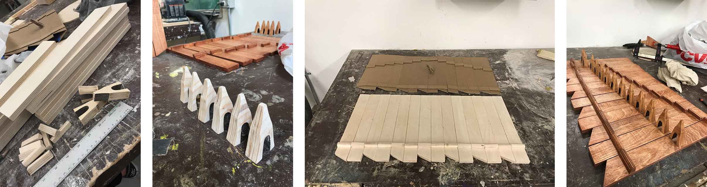
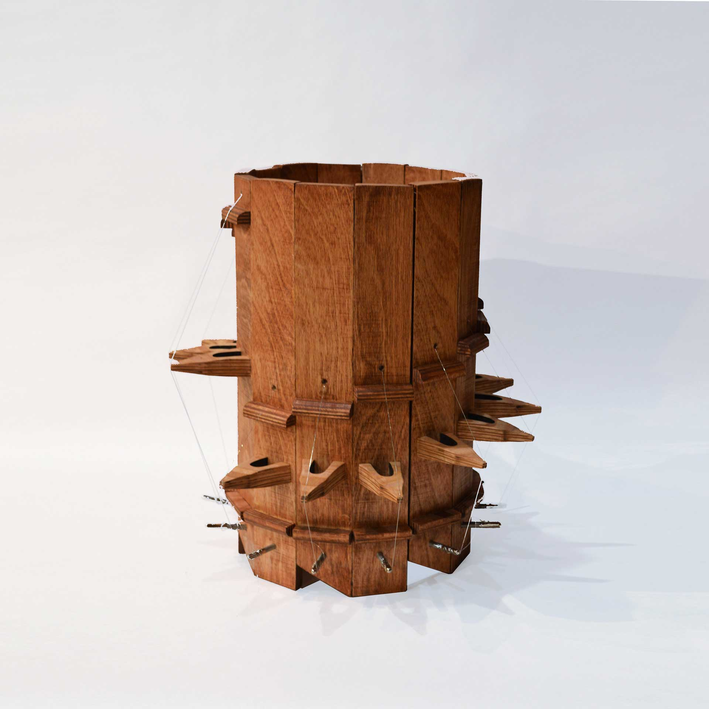
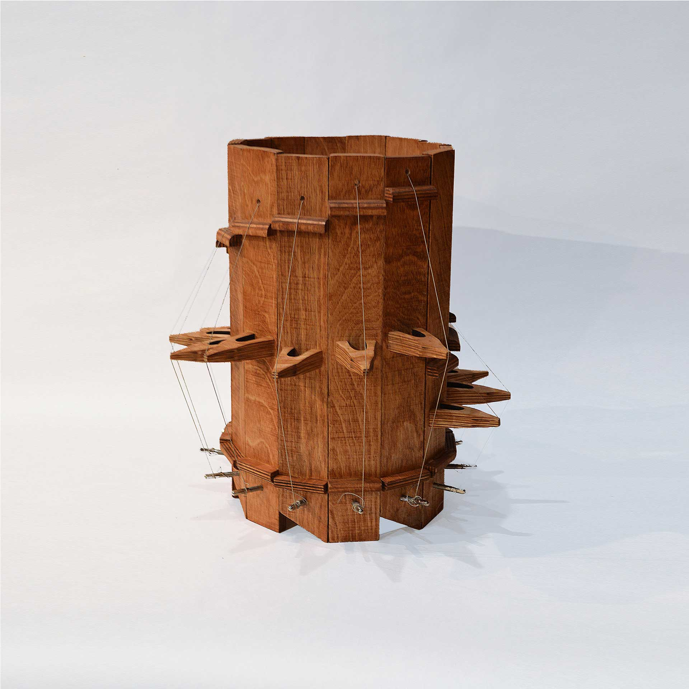
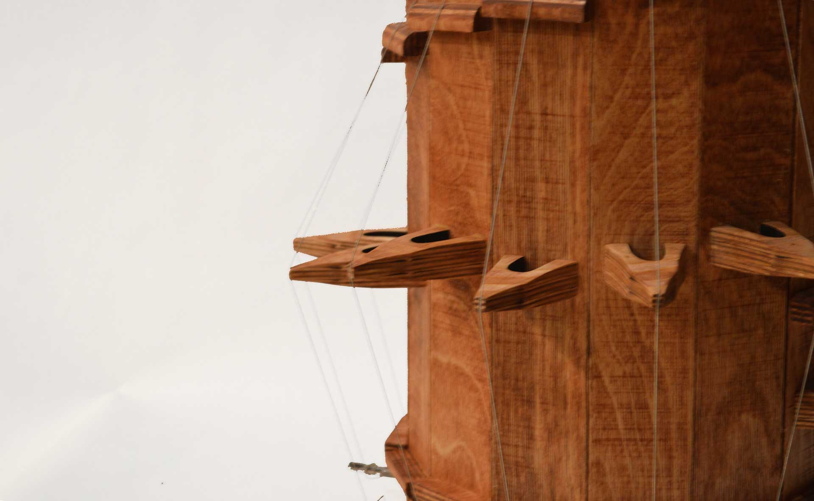
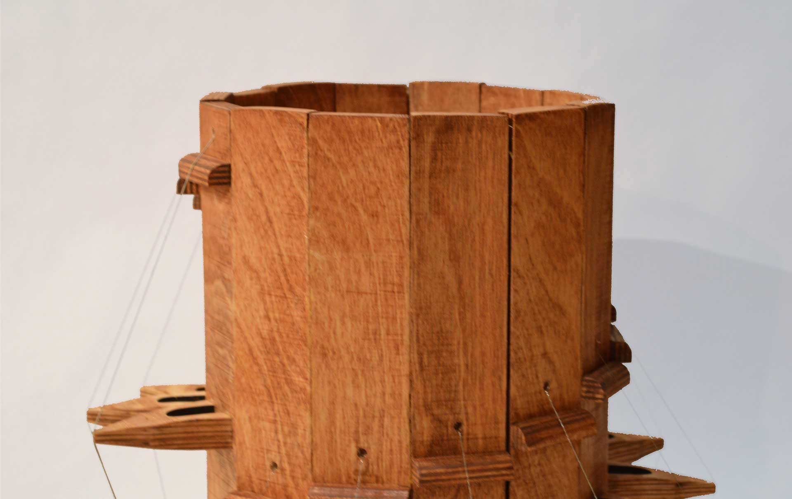
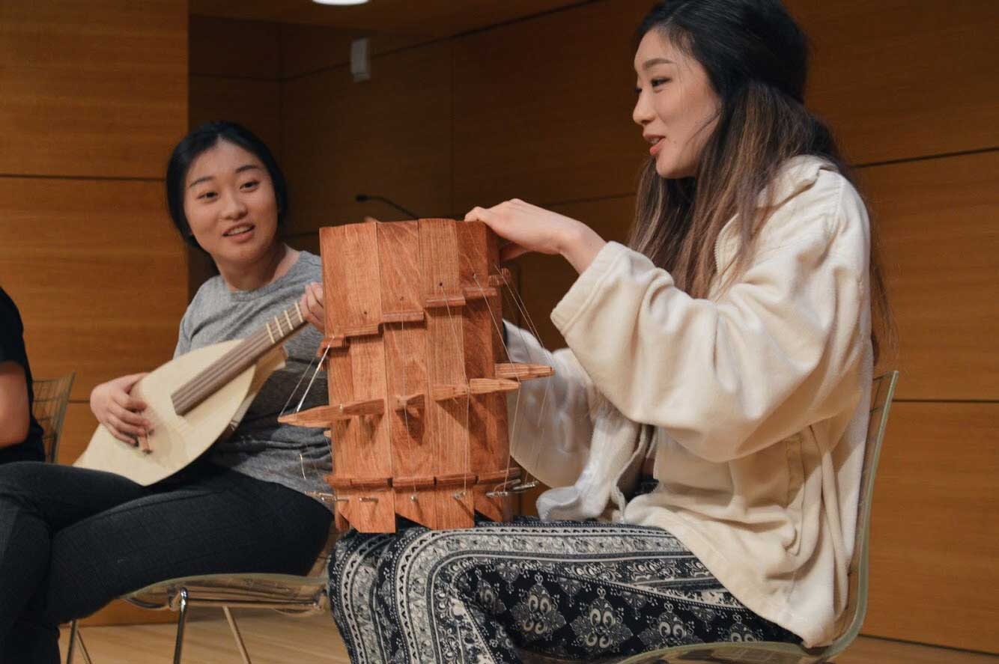
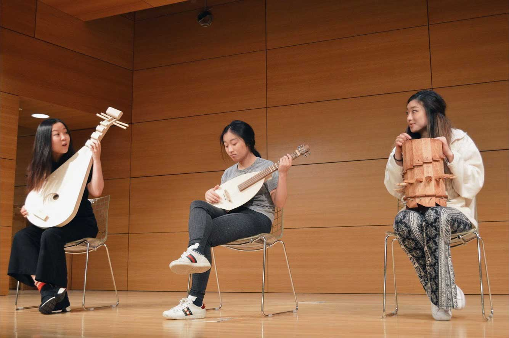

Wooden Instrument
A wooden string instrument inspired by the Chinese Zither (古筝).

Introduction
This instrument is inspired by the Chinese Zither (古筝).
I detached each string as its own section and used 14 boards to create a circular instrument with a 360 degree surface of access. The instrument is made of plywood and tinted to be a deeper shade of brown. I used the Roosebeck Lyre Harp Strings 8 String Set.

Instrument making process.





Final presentation.
